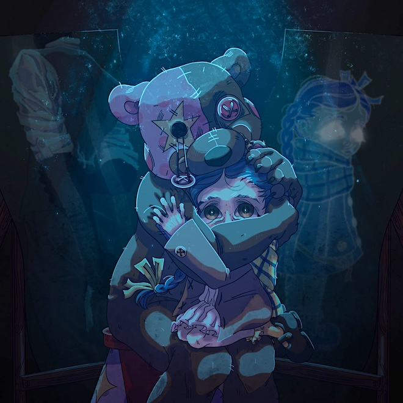
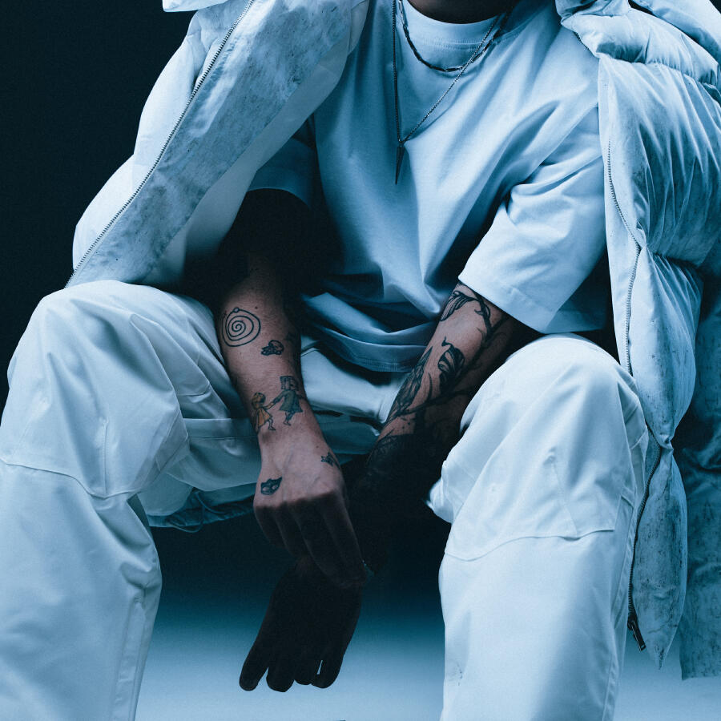
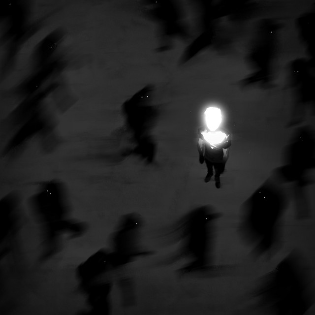
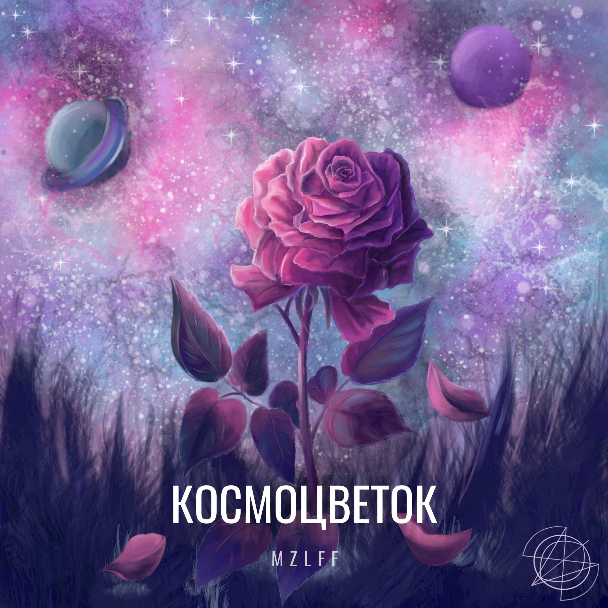
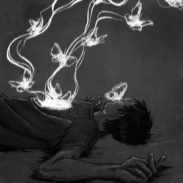
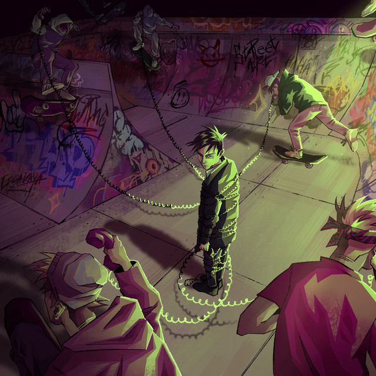

MZLFF
Добро пожаловать на неофициальный сайт посвящённый исполнителю MZLFF.
На сайте вы можете найти все нужные ссыли на исполнителя.
Добро пожаловать на неофициальный сайт посвящённый исполнителю MZLFF.
На сайте вы можете найти все нужные ссыли на исполнителя.













Илья́ Мазе́ллов (настоящее имя — Илья́ Ива́нович Коряко́в, род. 28 апреля 1999, Москва), также известен как mazellovvv или mzlff — российский блогер, стример, музыкант, участник рэп-баттлов.
С ранних лет занимался блогерской деятельностью на платформе YouTube и желал стать ведущим прямых трансляций.
С 2018 года он стал активно вести трансляции на платформе Twitch. Первую известность получил благодаря диссам на популярных стримеров. Мазеллов преимущественно проводит стримы в категории «Общение», собирая многотысячную аудиторию. Периодически транслирует игровой контент: CS:GO, Dota 2, Among Us, Fall Guys, Gartic Phone и другие. В 2020 году его пригласили в сообщество Twitch-стримеров — «89 SQUAD», в котором также состоят JesusAVGN*, Bratishkinoff, T2x2, Stintik и другие
На втором курсе университета познакомился с культурой рэп-баттлов и начал писать свои тексты. С 2018 по 2024 год поучаствовал в 14-ти баттлах, 9 из которых он выиграл. В баттлах использовал псевдонимы Маз Корж и MZLFF
Первый EP «2018 year» артист выпустил в 2018 году совместно с Byze и Superhazepuff. В 2019 году Мазеллов выпустил свой первый полноценный альбом «Ничего плохого». 25 ноября 2022 года выпустил альбом «к маяку вселенной» и к 30 ноября занял 1-е место в суточном чарте BandLink, а в еженедельном чарте он занимал 7-е место
В 2022 году mzlff дал свои первые сольные концерты в Москве и Санкт-Петербурге, а в 2023 году провёл два тура по городам России под названиями «MZLFF TOUR 2023» и «Ам Ням tour», в рамках которых он посетил 10 и 23 города России соответственно